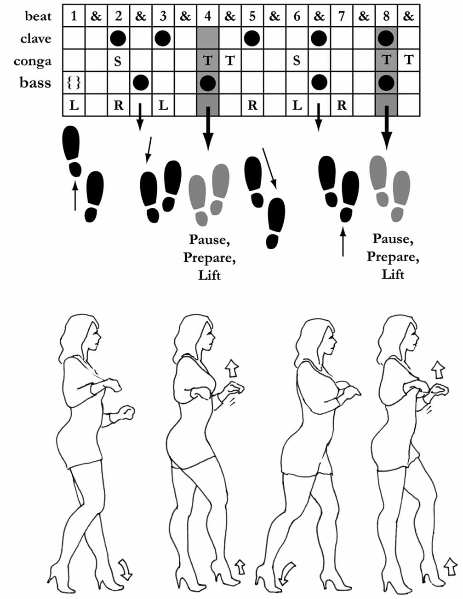
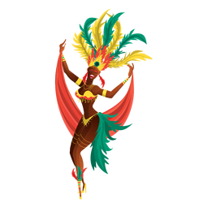

Step 1
Keep your upper body straight and bend slightly at the knees. Your feet should be together.

Step 2
Move your right foot back on the first downbeat. Then step your left foot in place on 2 and bring your right foot back to center on 3.
Repeat this step on the left foot.
Step 3
Feet should alternate on 3/4 count, ie. 1, 2, 3. 1, 2, 3...
Your arms move in a "wax-on, wax-off" motion. Right arm comes down when your right foot steps back, left arm comes down when your left foot steps back, etc.
